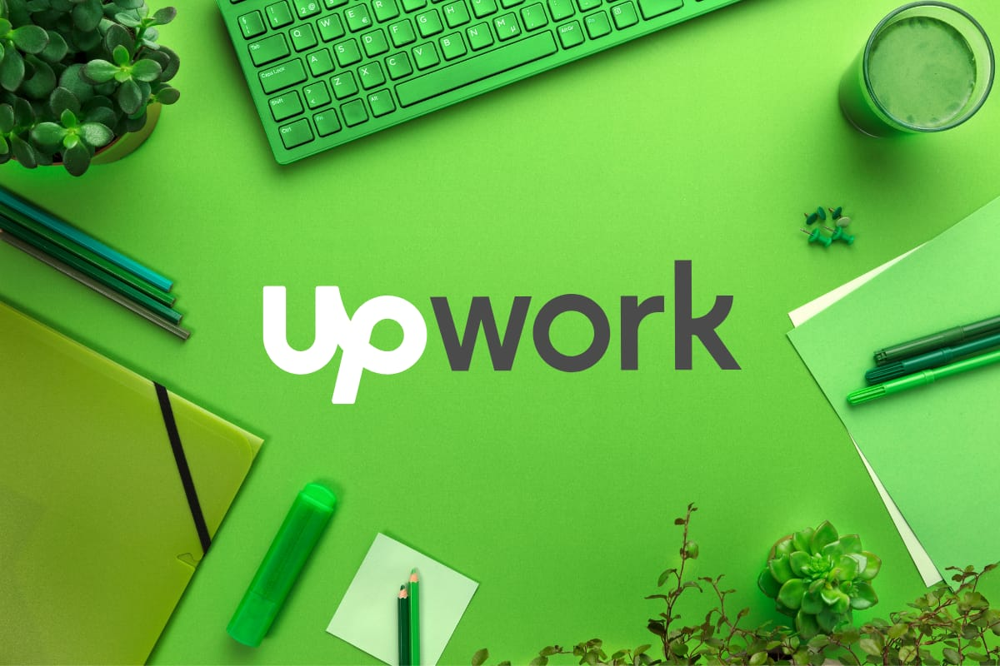

01
Upwork
upwork.com
Upwork is a large freelance marketplace where clients post projects and freelancers can submit proposals for those projects.
Best for
Web development & long-term clients
How it works
Find projects → Send proposal → Get hired

✓ Advantages
- Large number of projects
- Good for long-term clients
- Many web development jobs
✕ Considerations
- Competition can be high
- Proposals take time
- Building reputation takes time